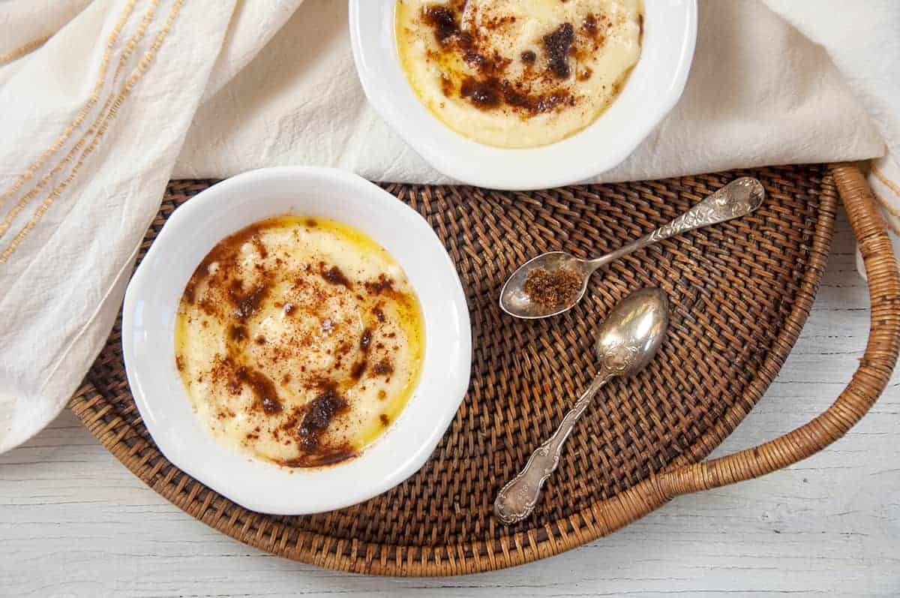

Rømmegrøt

Description
Today we are exploring a Norwegian comfort recipe, Rømmegrøt. If you havent heard of it before, that is ok, but you need to give this treat a try! If you know what it is, I bet you are already with me on how great it is and this recipe will help you recreate it. Perhaps your grandmother made Rømmegrøt for you or it was a Christmas tradition for your family. Whether you are searching for a comfort recipe for yourself or looking to bring a new tradition to your family, consider this warm, delicious, and simple Rømmegrøt recipe.